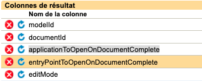
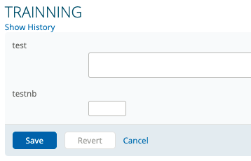

Les "Generique Search"
C'est un composant qui permet d'utiliser du code SQL ou JS et qui permet de retourné un tableau de résultat, c'est la partie back-end qui est utilisé, c'est une compétence que je ne maîtrise pas totalement ce qui est me permet d'approfondir mes connaissances.
Generique Search SQL
Voici le code pour une Generique Search en SQL : --Training, TrainingSearch
SELECT 'uuid_d9b88217-d680-4878-abbe-94cbe132e8c1' ,
(SELECT TOP 1 doc.documentidentifier
FROM v2_TRAINNING_5Q$JT train
INNER JOIN v2_DocumentMetaData_0Z14K V2M ON train.documentId=V2M.documentid
INNER JOIN V_DOCUMENT doc ON doc.documentId = train.documentId
INNER JOIN v2_DcmMtDt_0Z14K_p_ptnId_6KYRZ meta ON meta.v2_DocumentMetaData_0Z14K = V2M.v2_DocumentMetaData_0Z14K
WHERE meta.idNumber_9LV7R = <%=SqlParameters.add(AppVars.patientId)%> ORDER BY doc.documentId DESC)
AS documentId
, 'Training' AS application
, 'Training' AS entryPoint
, 'edit' AS editMode
Concernant FROM v2_TRAINNING_5Q$JT train c'est la vue de la base de données sur laquelle on va travailler et train est l'alias que l'on lui donne.
Le premier Select comprend l'uuid du formulaire que l'on a crée et on récupere cet uuid dans la partie back-end.
Ensuite v2_DocumentMetaData_0Z14K V2M ON train.documentId=V2M.documentid pour v2_DocumentMetaData_0Z14K V2M c'est la table qui comprend les meta data (modelId voir screenshot colonne de résultat) du formulaire et V2M est l'alias, ON train.documentId=V2M.documentid est la colonne qui contient l'identifiant du document.
Puis V_DOCUMENT doc ON doc.documentId = train.documentId, V_DOCUMENT doc est la table qui contient l'id du document (documentId voir screenshot colonne de résultat).
v2_DcmMtDt_0Z14K_p_ptnId_6KYRZ est la table qui contient le patientID qui est indispensable pour que tout fonctionne.
idNumber_9LV7R est la colonne qui contient le patientID (patientId voir screenshot colonne de résultat), qui est elle même une colone de v2_DcmMtDt_0Z14K_p_ptnId_6KYRZ.
<%=SqlParameters.add(AppVars.patientId)%> est une variable que l'on recupere dans le details de l'application, voici où on la retrouve:
ORDER BY doc.documentId DESC on trie par ordre décroissant de façon a avoir la derniere version du document modifié.
AS documentId on attribut un alias au résultat.
'Training' AS application cette partie correspond a l'application qui est appelé par la Generique Search (applicationToOpenOnDocumentComplete voir screenshot colonne de résultat) il est rappelé une fois le formualaire remplis.
'Training' AS entryPoint cette partie correspond a l'entryPoint qui est appelé par la Generique Search (entryPointToOpenOnDocumentComplete voir screenshot colonne de résultat) il est rappelé une fois le formualaire remplis.
'edit' AS editMode et enfin celle-ci permet d'editer le formulaire il faut ajouter a cela (editMode voir screenshot colonne de résultat).
Le screenshot colonne de résultat:
Résultat de la Search :
On peut constater que le formulaire est bien appelé et on peut donc le remplir, et il y aussi une fonction de sauvegarde des données, lorsque que l'on réouvrira ce formulaire il sera pré-rempli avec les données entré au paravant d'ou le versionage de document et l'appel du dernier utilisé.
Generique Search JS
On souhaite reproduir la même Search mais cette fois avec une majeur partie de javascript on va donc utiliser le code suivant:
SELECT
CLINICAL.modelId,
CLINICAL.documentId,
CLINICAL.application,
CLINICAL.entrypoint,
CLINICAL.editMode
FROM {{
<%exec SqlParameters.add(AppVars.get("patientId"))%>
var patientId = SqlParameters[1].trim();
var logger = org.apache.log4j.Logger.getLogger("training");
var context = new javax.naming.InitialContext(),
dataSource = context.lookup("java:comp/env/jdbc/orion/repository"),
connection = dataSource.getConnection(),
resultSet = null;
var Results = [];
var query = " select 'uuid_d9b88217-d680-4878-abbe-94cbe132e8c1' as modelId,
(select top 1 doc.documentidentifier \
FROM v2_TRAINNING_5Q$JT train \
INNER JOIN v2_DocumentMetaData_0Z14K V2M on train.documentId=V2M.documentid \
INNER JOIN V_DOCUMENT doc ON doc.documentId = train.documentId \
INNER JOIN v2_DcmMtDt_0Z14K_p_ptnId_6KYRZ meta ON meta.v2_DocumentMetaData_0Z14K = V2M.v2_DocumentMetaData_0Z14K \
where meta.idNumber_9LV7R = '"+patientId+"' ORDER BY doc.documentId DESC) \
as documentId, 'Training' as application, 'Training' as entryPoint, 'edit' as editMode";
var queryPrepStatement = connection.prepareStatement(query);
try{
resultSet = queryPrepStatement.executeQuery();
while(resultSet.next()){
var Result = new Object();
Result.modelId = resultSet.getString("modelId");
Result.documentID = resultSet.getString("documentId");
Result.application = resultSet.getString("application");
Result.entrypoint = resultSet.getString("entrypoint");
Result.editMode = resultSet.getString("editMode");
Results[Results.length] = Result;
}
}
catch(err){
logger.error("RGE Progress Notes Search: "+ err);
throw new Error("Error executing query: "+ err);
}
finally{
if(resultSet) resultSet.close();
if(connection) connection.close();
}
Results;
}} AS CLINICAL
CLINICAL.modelId, Ces éléments sont les libelés de chaque case du tableau qui compose l'objet.
CLINICAL.documentId,
CLINICAL.application,
CLINICAL.entrypoint,
CLINICAL.editMode
var logger = org.apache.log4j.Logger.getLogger("training") est ce qui nous permet d'avoir les logs d'afficehr sur la partie backend.
var context = new javax.naming.InitialContext() est ce qui nous permet d'avoir le context patient c'est à dire c'est ce qui va dans le dossier patient dans lequel nous nous trouvons.
dataSource = context.lookup("java:comp/env/jdbc/orion/repository") c'est la base de données dans laquelle on va allez cherchez le formulaire.
connection = dataSource.getConnection() c'est ce qui permet la conenction a la base de données.
resultSet = null on donne une valeur null au resultSet pour ne pas avoir d'erreur de retour.
var Results = [] on crée le tableau Results pour pouvoir stocker les données dedans.
var query c'est la query SQL qui est appelé.
var queryPrepStatement = connection.prepareStatement(query) on prépare la query SQL.
try{ on effectue un try catch, on parcours le tableau resultSet, on crée un objet Result vide, on execute la query SQL puis on remplis notre objet Result avec les resultats de la query et enfin on remplis le tableau Results avec Result que l'on retournera plus tard.
resultSet = queryPrepStatement.executeQuery();
while(resultSet.next()){
var Result = new Object();
Result.modelId = resultSet.getString("modelId");
Result.documentID = resultSet.getString("documentId");
Result.application = resultSet.getString("application");
Result.entrypoint = resultSet.getString("entrypoint");
Result.editMode = resultSet.getString("editMode");
Results[Results.length] = Result;
}
catch(err){
cela nous permet d'avoir les logs d'erreurs.
logger.error("RGE Progress Notes Search: "+ err);
throw new Error("Error executing query: "+ err);
finally{
fermeture de resultSet et coupure de la connection a la base de données
if(resultSet) resultSet.close();
if(connection) connection.close();
Results; envoi du tableau Results
Conclusion
J'ai pu approfondir mes connaissances autant sur la partie back-end que sur le langage SQL ainsi que le langage Javascript, l'apprentisage de ces generique search me permettra de travailler lors de mon alternances sur de plus gros projets au sein de l'entreprise toujours accompagné de Xavier.